Ronald Read was a gas station attendant and janitor in rural Vermont. He fixed cars for 25 years and swept floors at JCPenney for 17 years. He lived in a small two-bedroom house he bought for \$12,000.
When he died in 2014 at age 92, the humble janitor made international headlines.
He had quietly amassed a net worth of over \$8 million, leaving most of it to his local library and hospital.
A few months before Read died, Richard Fuscone was in the news. Fuscone was a Harvard-educated Merrill Lynch executive with an MBA. He was so successful in finance that he retired in his 40s to become a philanthropist. He lived in an 18,000-square-foot mansion in Connecticut with two elevators and two pools.
But when the 2008 financial crisis hit, Fuscone's high-debt lifestyle crumbled. He declared bankruptcy. His mansion was sold in a foreclosure auction for 75% less than its estimated value.
Ronald Read was patient. Richard Fuscone was greedy.
That distinction alone eclipsed the massive education and experience gap between them.
How did this happen?
In what other field can someone with no degree, no training, and no background massively outperform someone with the best education and connections?
You can't imagine a janitor performing heart surgery better than a Harvard-trained surgeon. You can't imagine him designing a skyscraper superior to a top architect.
But it happens in money.
All the time.
The reason is that financial success is not a hard science. It is a soft skill, where how you behave is more important than what you know.
We treat money like physics. Governed by rules and laws. When we should treat it like psychology. Governed by emotions and nuance.
This creates an uncomfortable truth: You can be a genius and lose it all. You can be ordinary and build immense wealth.
The difference is not IQ. It's behavior.
This longform unpacks the behavioral forces that shape our financial lives.
By the end, you will discover:
- Why your childhood shapes your risk tolerance more than any spreadsheet ever could.
- Why the "irrational" investor often beats the spreadsheet genius.
- Why survival beats brilliance as an investment strategy.
- Why no one actually notices the person driving the Ferrari.
- Why the highest dividend money pays isn't cash. It's freedom.
Welcome to the psychology of money.
The 1-Minute Summary Doing well with money has little to do with intelligence and everything to do with behavior.
Behavior is hard to teach, even to brilliant people.
We treat finance like math, but decisions happen at the dinner table, not on spreadsheets. Personal history, ego, fear, and hope scramble together to shape every choice.
Key Insights: * Reasonable > Rational: The strategy you can stick with beats the strategy that's mathematically optimal. * Survival is everything: You have to stay in the game long enough for compounding to work. * Wealth is invisible: It's the money you don't spend, the options you haven't used yet. * Freedom is the goal: Control over your time is the highest dividend money pays. * No one is crazy: Everyone's financial behavior makes sense to them, given their history.
If this breakdown resonates, explore more at longform.online
Module 1: The Psychology of Decisions
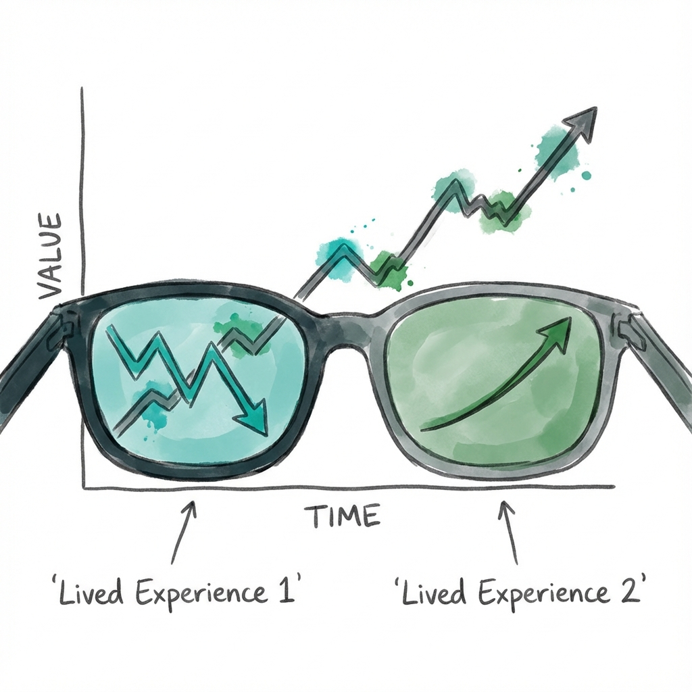
We all think we know how the world works. But we’ve all only experienced a tiny sliver of it.
1. No One Is Crazy
Your personal experiences with money make up maybe 0.00000001% of what’s happened in the world. But they make up maybe 80% of how you think the world works.
People do some crazy things with money.
But no one is crazy.
A person who grew up in poverty thinks about risk and reward in ways the child of a wealthy banker cannot fathom.
Someone who lived through the Great Depression has a permanent emotional scar that a tech worker in the booming 1990s can't imagine.
A child who watched her parents lose her home in 2008 grows up to hoard cash.
A teenager who saw his father's portfolio triple in the 1990s buys stocks without hesitation.
Same brain. Different software.
Economists have confirmed this.
People's lifetime investment decisions are heavily anchored to the experiences of their generation, especially early adulthood.
These aren't rational choices based on data.
They are accidents of birth.
We see the world through a different lens. Spreadsheets can model the historic frequency of big stock market declines. But they can’t model the feeling of coming home, looking at your kids, and wondering if you’ve made a mistake that will impact their lives. — Morgan Housel
When you see someone making a financial decision that seems insane to you—buying lottery tickets when they are broke, or keeping all their cash under a mattress, remember that they are solving a problem based on the variables they know.
They are constructing a narrative that makes sense to them.
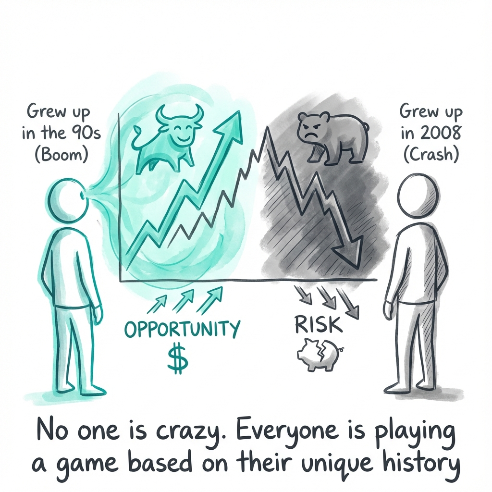
2. Reasonable > Rational
You are not a spreadsheet.
You are a person.
A screwed up, emotional person.
Academic finance aims for the mathematically optimal strategy. But in the real world, people don't want the mathematically optimal strategy. They want the strategy that maximizes for how well they sleep at night.
Aiming to be reasonable is superior to aiming to be coldly rational.
Consider a medical analogy: Fevers are a natural defense mechanism. They help the body fight infection. Scientifically, it might be rational to let a fever run its course to aid recovery. But it hurts. It’s miserable. So we take Tylenol to bring the fever down. That is reasonable.
If a financial strategy is mathematically perfect but emotionally unbearable, you will quit.
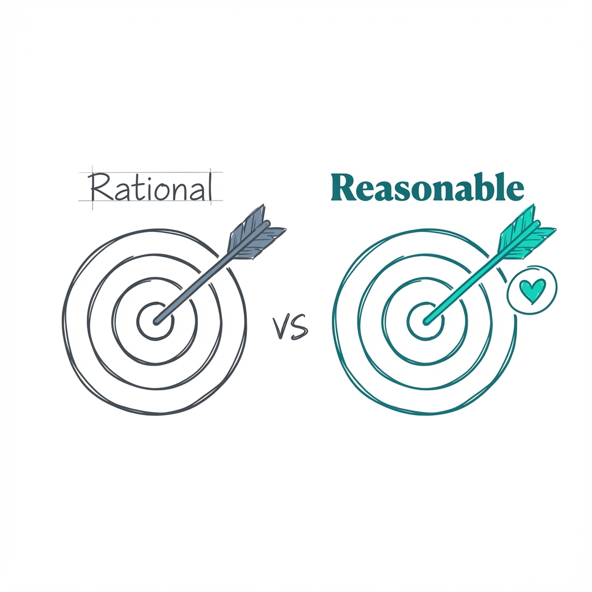
And the most important variable in investing is sticking with it.
If you love your investments. If you have an emotional attachment to them. You are less likely to panic and sell when they drop.
A strictly rational investor who has no emotional connection to their portfolio might bail at the first sign of trouble because they have no reasonable reason to stay.
The reasonable investors who love their technically imperfect strategies have an edge, because they’re more likely to stick with those strategies. — Morgan Housel
3. Playing Your Own Game
Investors often innocently take cues from other investors who are playing a different game than they are.
Bubbles form when long-term investors start taking their cues from short-term traders.
In 1999, Cisco stock was trading at \$60, a valuation that made no sense for a long-term investor. But for a day trader, \$60 was a great price if they thought they could sell it for \$61 by lunch.
The problem arises when a long-term investor looks at the rising price, assumes the traders know something he doesn't, and buys in. He is now playing a short-term game with long-term money.
Money chases returns to the greatest extent that it can. If an asset has momentum... it’s not crazy for a group of short-term traders to assume it will keep moving up. — Morgan Housel
The price of an asset is relative to who is buying it.
There is no single rational price.
When you see a stock price or a housing market doing something that looks irrational, ask yourself: What game are they playing?
Ensure you are not being persuaded by the actions of people with completely different time horizons and goals.
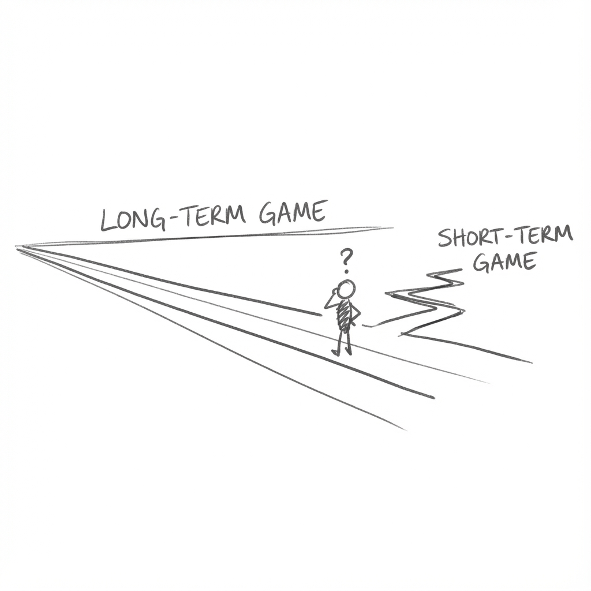
4. Appealing Fictions
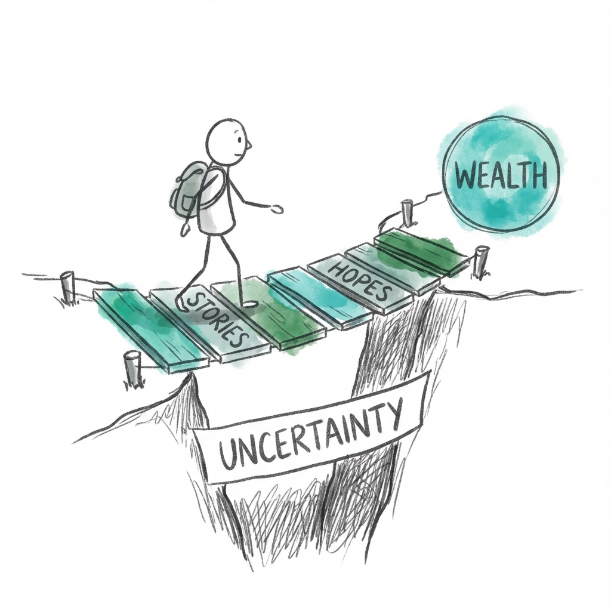
The more you want something to be true, the more likely you are to believe a story that overestimates the odds of it being true.
We all have an incomplete view of the world. But the human brain cannot handle uncertainty.
So we fill in the gaps with stories, appealing fictions, that make us feel in control.
Why do people listen to TV investment pundits who have terrible track records?
Because the stakes are high.
If there is a 1% chance a prediction could make you rich, it feels worth listening to. When you are desperate, you will believe anything.
This is why people in financial ruin buy lottery tickets, and why sophisticated investors fell for Bernie Madoff’s Ponzi scheme.
The gap between what they needed to be true (high, steady returns) and reality was so wide that they accepted a fiction to close it.
Be careful when a financial narrative sounds exactly like what you want to hear.
Module 2: The Math of Success
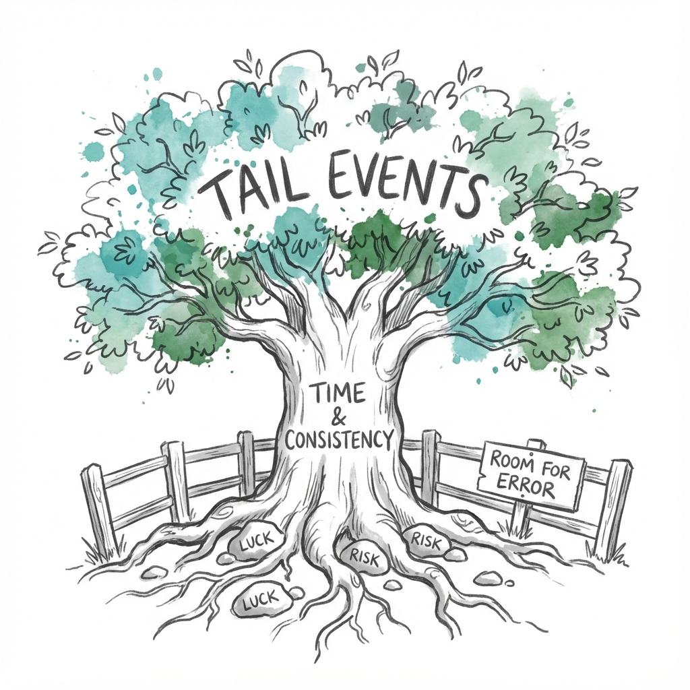
We often underestimate the invisible forces that drive financial outcomes. We focus on individual actions and intelligence, ignoring the massive roles played by luck, time, and statistical tails.
1. Luck & Risk
Luck and risk are siblings.
They are both the reality that every outcome in life is guided by forces other than individual effort.
Consider Bill Gates.
He is brilliant and hardworking. But he also went to Lakeside School, one of the only high schools in the world that had a computer in 1968. If he hadn’t gone to Lakeside, there would be no Microsoft.
The odds of a high-school-age student attending a school with a computer were about one in a million.
Gates experienced one-in-a-million luck.
Now consider Kent Evans.
He was Gates’ best friend and classmate at Lakeside. He was just as smart and ambitious as Gates. They planned to conquer the world together. But Kent died in a mountaineering accident before graduating high school.
The odds of a high school student dying on a mountain are roughly one in a million.
Kent experienced one-in-a-million risk.
The same force, the same magnitude, working in opposite directions.
Luck and risk are so similar that you can’t believe in one without equally respecting the other. They both happen because the world is too complex to allow 100% of your actions to dictate 100% of your outcomes. — Morgan Housel
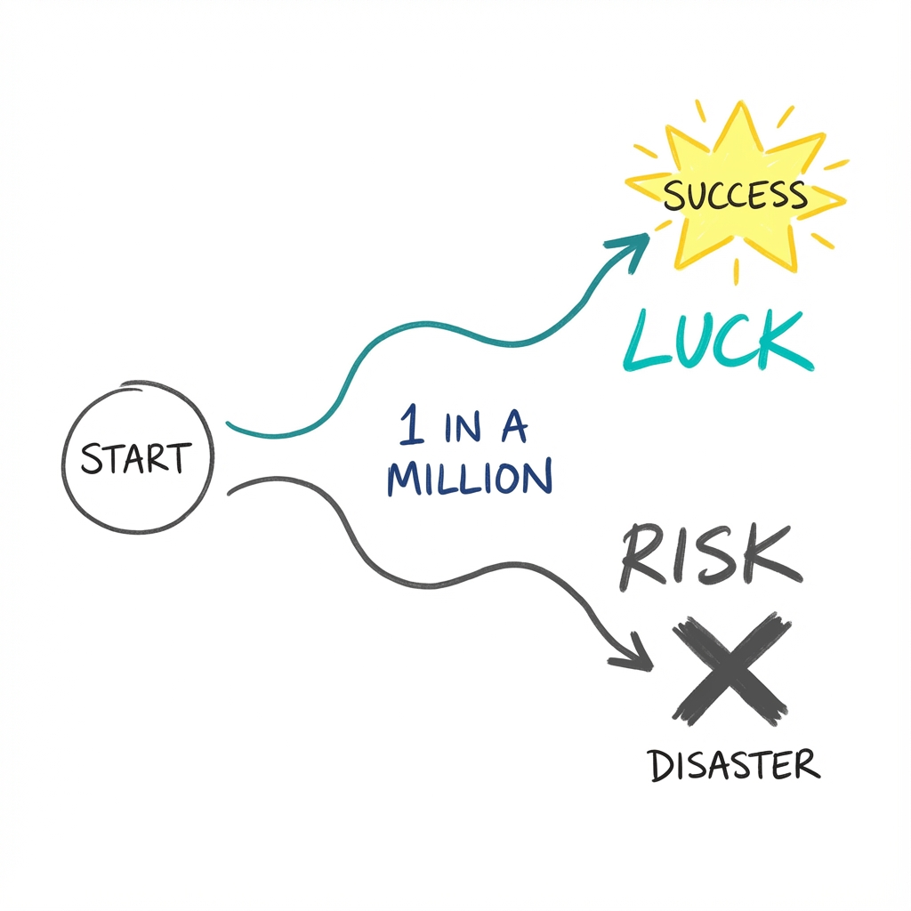
Be careful who you praise and who you look down upon.
Realize that not all success is due to hard work, and not all poverty is due to laziness.
When judging your own failures, forgive yourself.
2. Confounding Compounding
Warren Buffett is the richest investor of all time.
But he is not the greatest.
Jim Simons, head of Renaissance Technologies, has compounded money at 66% annually.
Buffett? Roughly 22%.
Yet Buffett is far richer.
Why?
Time.
Buffett began serious investing when he was 10 years old. By 30, he had a net worth of \$1 million. \$81.5 billion of his \$84.5 billion net worth came after his 65th birthday.
If Buffett had started investing at age 30 with \$25,000, and retired at 60, while still earning his extraordinary 22% annual returns, his net worth today would be roughly \$11.9 million.
That is 99.9% less than his actual fortune.
His skill is investing, but his secret is time.
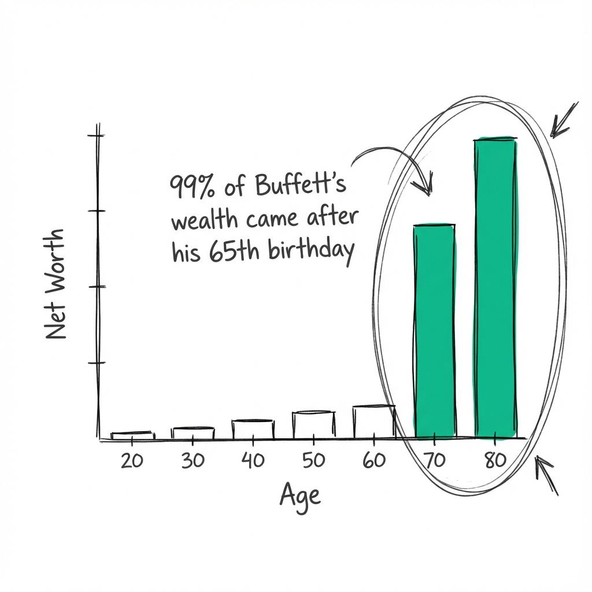
The human brain struggles with exponential growth.
We think linearly: ``` 8+8+8+8 = 32
Compounding is exponential: ```
8 \times 8 \times 8 \times 8 = 4,096
We underestimate how big small things can grow if given enough time.
Big results don't require tremendous force. They require small, consistent growth fueled by time.
3. Tails, You Win
In finance, the ends of the distribution (the tails) influence the majority of the outcome.
In 1938, Walt Disney produced Snow White and the Seven Dwarfs. It earned \$8 million in its first six months, an order of magnitude more than anything the studio had earned before.
It paid off all company debts and bought the studio a new lot.
Before Snow White, Disney had produced 400 cartoons.
Most lost money. A few broke even.
Snow White was the tail event that paid for everything else.
This is normal. * Venture Capital: 65% of investments lose money. 0.5% of investments earn 50x or more. That tiny sliver drives all the industry's returns. * Public Stocks: Most public companies are duds. Since 1980, 40% of Russell 3000 stock components lost at least 70% of their value and never recovered. Effectively all the index's returns came from just 7% of the companies.
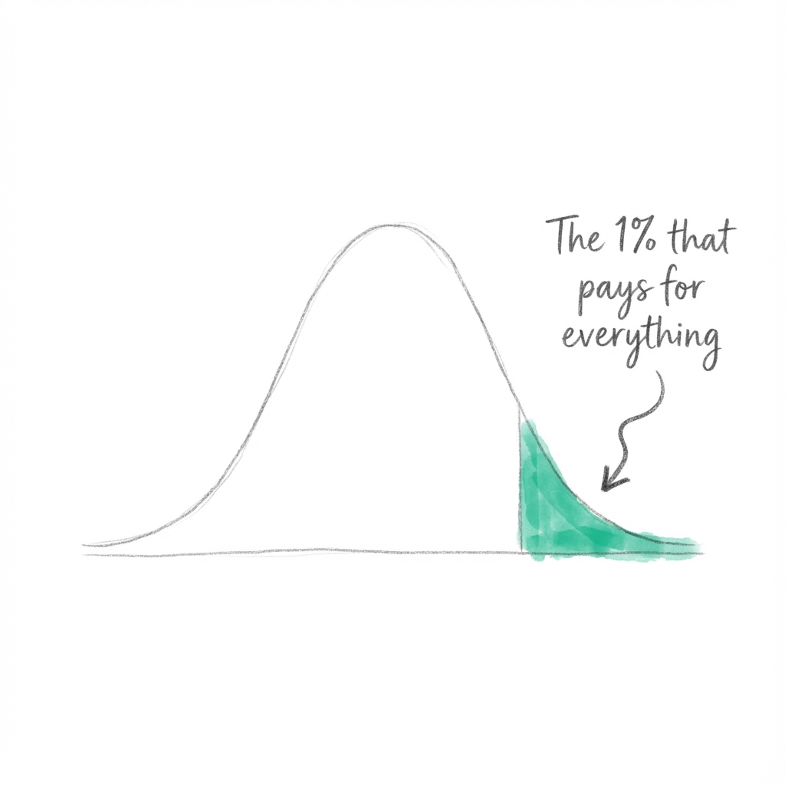
You can be wrong half the time and still make a fortune.
A good definition of an investing genius is the man or woman who can do the average thing when all those around them are going crazy. — Morgan Housel
Your success as an investor will be determined by how you respond to punctuated moments of terror—the tail events—not the years spent on cruise control.
4. Room for Error
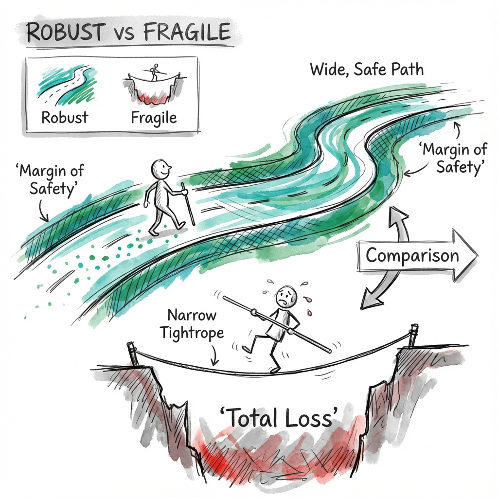
The only way to safely navigate a world governed by odds, not certainties, is margin of safety.
Blackjack card counters know they have a statistical edge.
But they don't bet every penny on every hand. They know that even with the odds in their favor, there is a chance they will lose.
They bet enough to profit, but small enough to survive a losing streak.
You have to plan on your plan not going according to plan.
Room for error is underappreciated. It looks like a conservative hedge, but it is actually the fuel that lets you stay in the game long enough to capture the tail events.
- Volatility: Can you survive a 30% market drop? Not just financially, but mentally? If you panic and sell, you wipe out your future potential.
- Retirement: What if future market returns are lower than history? What if you have a medical emergency?
If you need the future to be perfectly optimal for your plan to work, your plan is fragile.
The most important part of a plan is the part that accounts for the unknown.
Module 3: The Price of Wealth
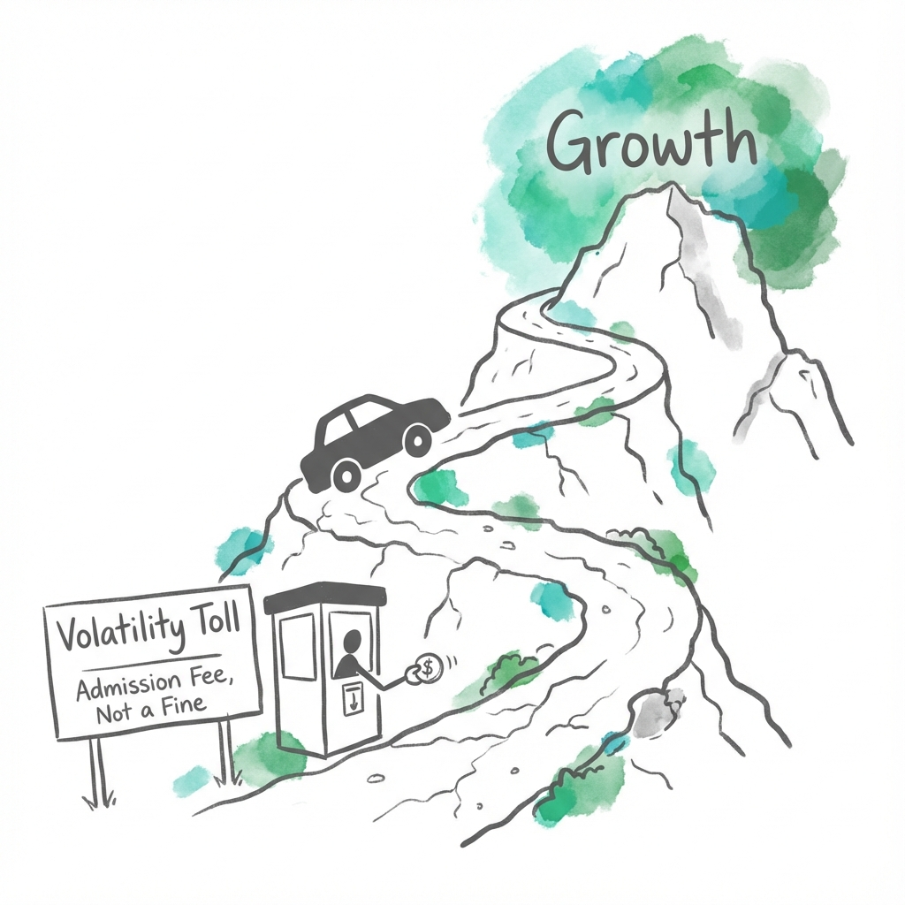
To achieve financial success, you must be willing to pay the price. But the price is rarely what you think it is.
1. Getting Wealthy vs. Staying Wealthy
There are a million ways to get wealthy, but only one way to stay wealthy: paranoia.
The kind that makes you check the locks twice, save for disasters that never come, and refuse to believe your luck is permanent.
Jesse Livermore was the greatest stock trader of his day.
In 1929, he shorted the market just before the crash. While Wall Street crumbled, Livermore made \$100 million in a single day (billions in today's money).
He was the richest man in the world.
Abraham Germansky was a multimillionaire real estate developer.
During the 1929 crash, he bet heavily on the market recovering. He lost everything and disappeared, presumably committing suicide.
Livermore and Germansky seem like opposites. But there was one more chapter.
Four years later, Livermore was broke.
After the 1929 win, he grew overconfident.
He bet bigger.
He lost everything.
In 1933, he took his own life.
Both were good at getting wealthy. Neither was good at staying wealthy.
Getting money requires taking risks, being optimistic, and putting yourself out there.
Keeping money requires the opposite. Humility, and fear that what you’ve made can be taken away from you.
Survival... is what makes the biggest difference. The ability to stick around for a long time, without wiping out or being forced to give up, is what makes the biggest difference. — Morgan Housel
Warren Buffett and Charlie Munger had a third partner in the early days: Rick Guerin.
Rick was just as smart as them. But Rick was in a hurry.
In the 1974 downturn, he used leverage (margin loans) to bet on the market. He was wiped out and forced to sell his Berkshire shares to Buffett for peanuts.
Rick didn't survive.
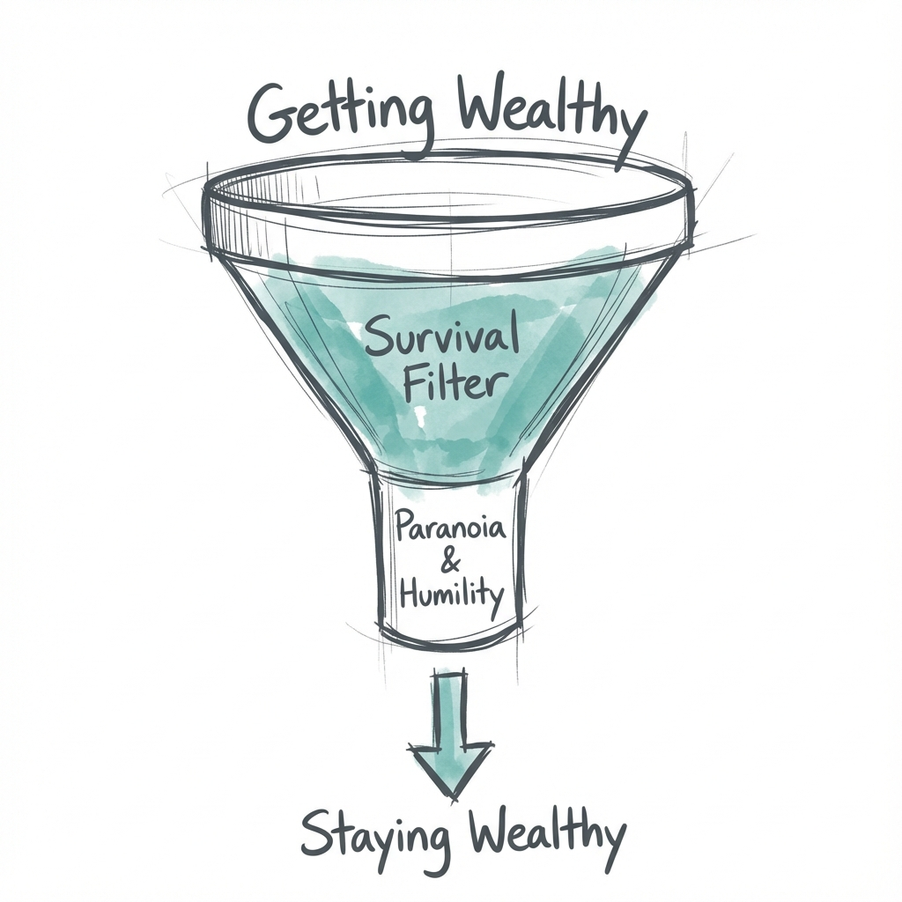
2. Nothing’s Free
Everything has a price, but not all prices appear on labels.
The S&P 500 increased 119-fold in the 50 years ending 2018. That is an incredible return.
But it wasn't free.
The cost of that return was volatility, fear, doubt, uncertainty, and regret.
If you want a 10% annual return, you have to accept that your portfolio might drop 30% or more from time to time.
Most investors try to get the return without paying the price. They try to time the market, selling before the drop and buying at the bottom.
This is like trying to steal a car to get a free ride. It rarely works.
View volatility as a fee, not a fine.
- Fine: A penalty for doing something wrong (like a speeding ticket). You try to avoid it.
- Fee: The cost of admission to get something good (like a Disneyland ticket). You pay it willingly.
When your portfolio drops, it's not a fine for making a mistake. It's the admission fee you pay for the privilege of earning long-term returns superior to cash.
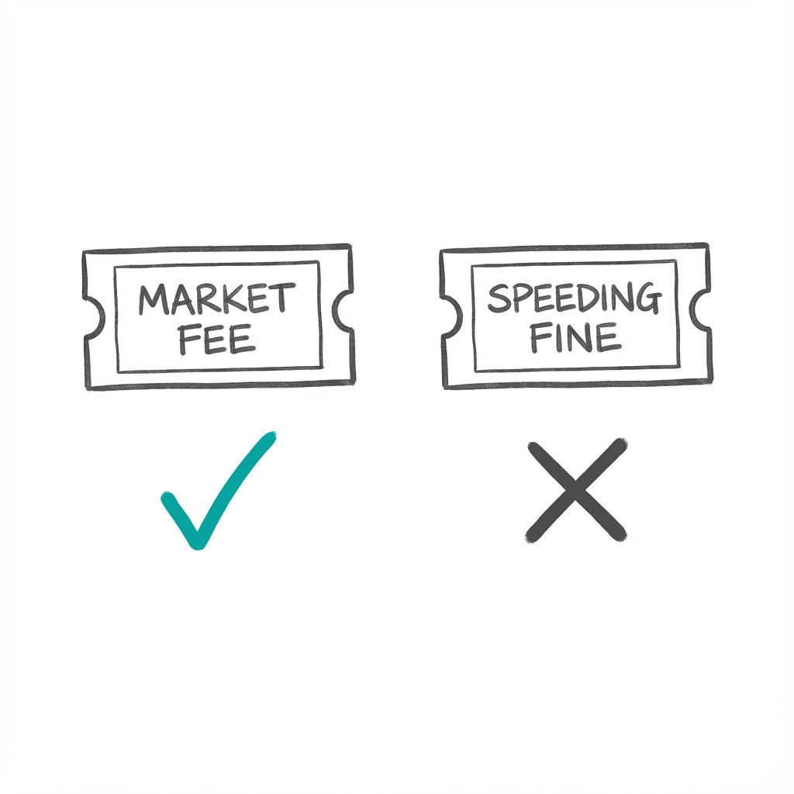
3. Surprise!
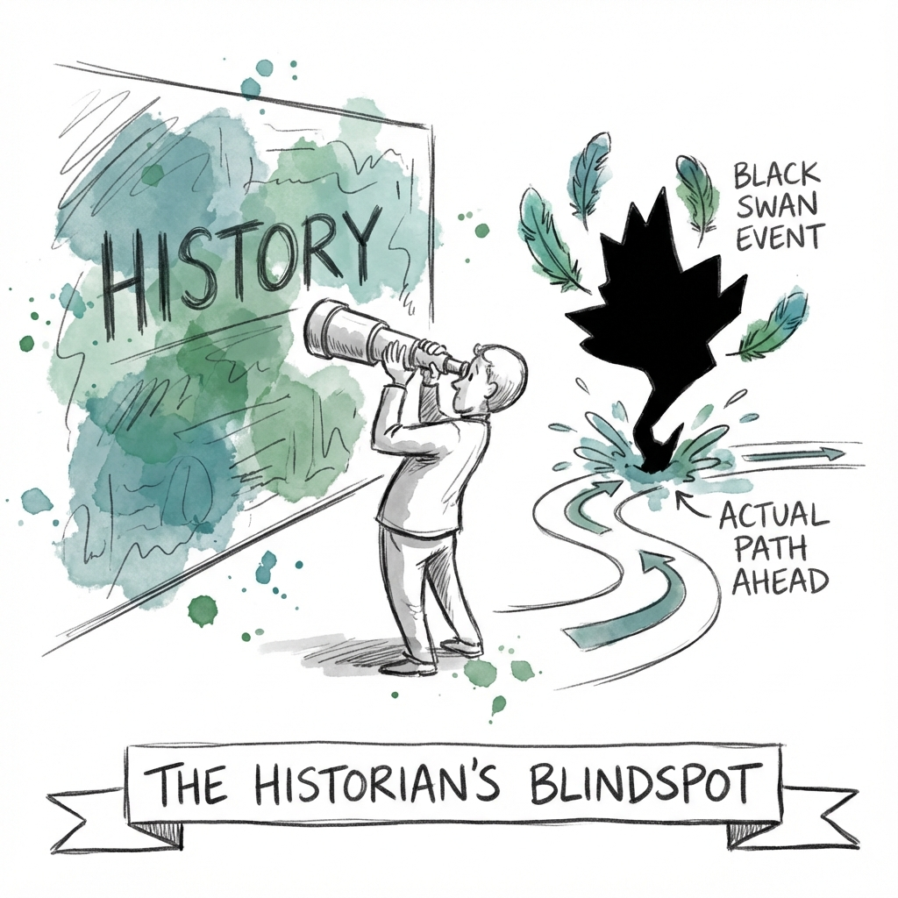
History is mostly the study of surprising events.
But we often use it as a map of the future.
This is the Historians as Prophets fallacy.
We rely on past data to predict the future, but the most important events are the outliers. The things that have never happened before.
Fifteen billion people were born in the 19th and 20th centuries.
But if you remove just seven of them (Hitler, Stalin, Mao, etc.), the world would look completely different today.
A tiny fraction of people and events drive the majority of outcomes.
Because these events are unprecedented, you can't prepare for them by looking at history.
The Great Depression had no precedent.
The 2008 financial crisis had no precedent.
The correct lesson to learn from surprises is that the world is surprising. — Morgan Housel
Your plan should not be based on what usually happens. It should be based on the reality that things that have never happened before happen all the time.
4. The Seduction of Pessimism
Optimism sounds like a sales pitch.
Pessimism sounds like someone trying to help you.
If you say the world is getting better, people call you naïve. If you say the economy is about to collapse, you get on TV.
Pessimism is intellectually seductive. It commands our attention because our brains are wired to prioritize threats.
But optimism is usually the better bet. Not everything will be great optimism, but possibilism—believing that even if things are messy, we will solve problems and move forward over time.
Progress happens slowly, through compounding.
Destruction happens quickly, through single points of failure.
- Destruction: A building can be destroyed in seconds by an earthquake.
- Construction: Building a city takes decades.
Because destruction is fast and loud, it dominates the news.
Because progress is slow and quiet, we often miss it.
But the slow, quiet progress usually wins in the end.
Module 4: The True Meaning of Wealth
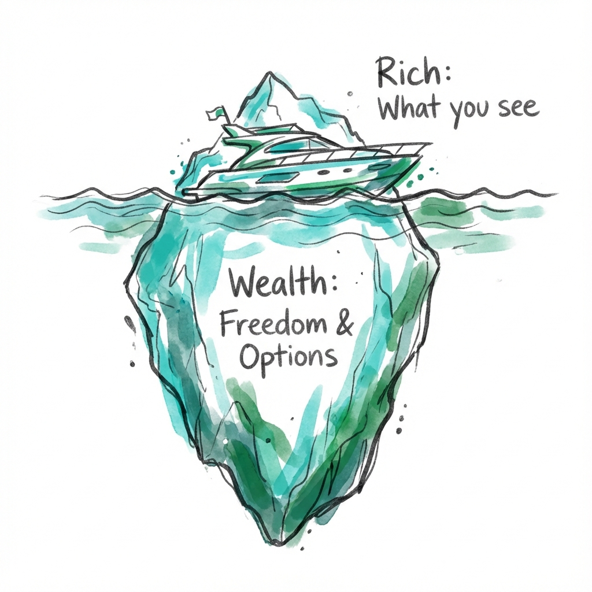
Money is a means to an end. But we often confuse the means with the end itself.
1. Never Enough
The hardest financial skill is getting the goalpost to stop moving.
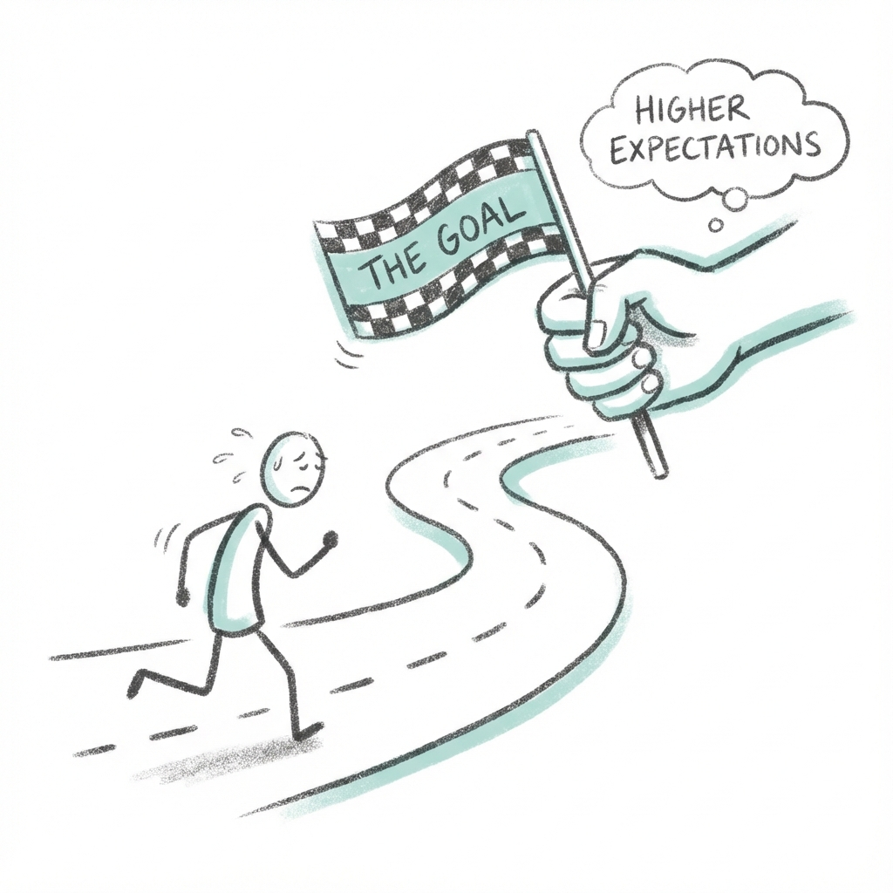
Rajat Gupta was orphaned as a teenager in Kolkata and grew up to become the CEO of McKinsey & Company.
He was worth \$100 million. He could have done anything he wanted.
But he wanted to be a billionaire.
In 2008, he learned that Warren Buffett was about to invest \$5 billion in Goldman Sachs.
He used this insider information to tip off a hedge fund manager, making a quick profit.
He was caught and sent to prison.
Gupta had everything—money, prestige, freedom—and threw it all away because he didn't know the meaning of enough.
There is no reason to risk what you have and need for what you don’t have and don’t need. — Morgan Housel
If your expectations rise with your income, you will never be happy.
You will always be chasing the next milestone, taking greater risks to get there, until you eventually break.
2. Freedom
The highest form of wealth is the ability to wake up every morning and say, "I can do whatever I want today."
More than your salary, more than the size of your house, control over your time is the most dependable predictor of happiness.
The American dream once meant a house, a car, and weekends off.
Now it means answering Slack at 11 PM and eating lunch at your desk.
We're richer on paper and poorer in hours.
Money's greatest value is not to buy luxury goods, but to give you control.
A small amount of savings means you can take a few days off when sick. More savings means you can wait for a good job instead of taking the first one available after a layoff. Financial independence means you can work because you want to, not because you have to.
Control over doing what you want, when you want to, with the people you want to, is the broadest lifestyle variable that makes people happy. — Morgan Housel
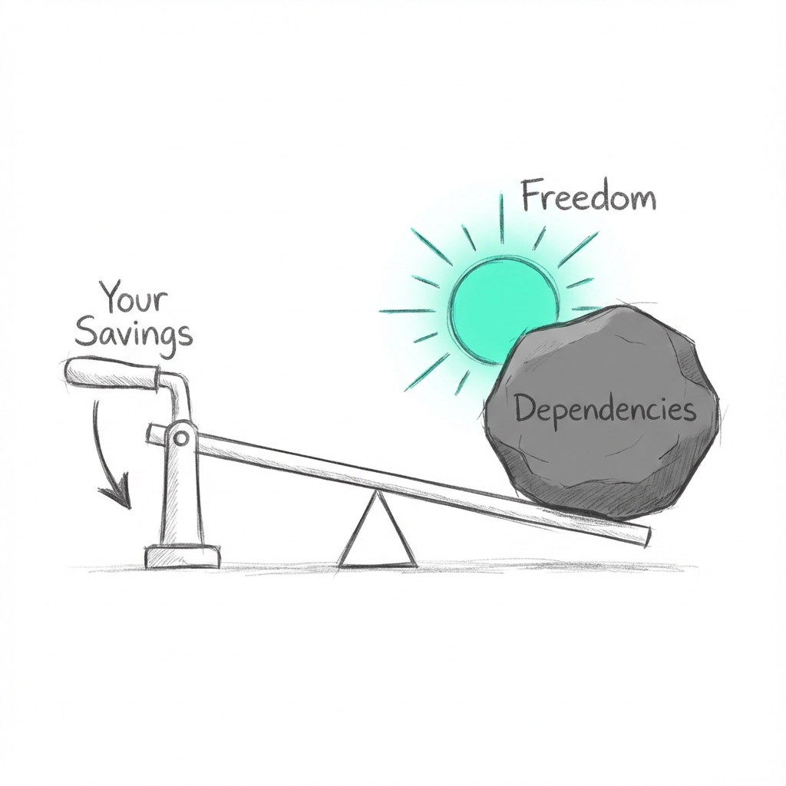
3. The Man in the Car Paradox
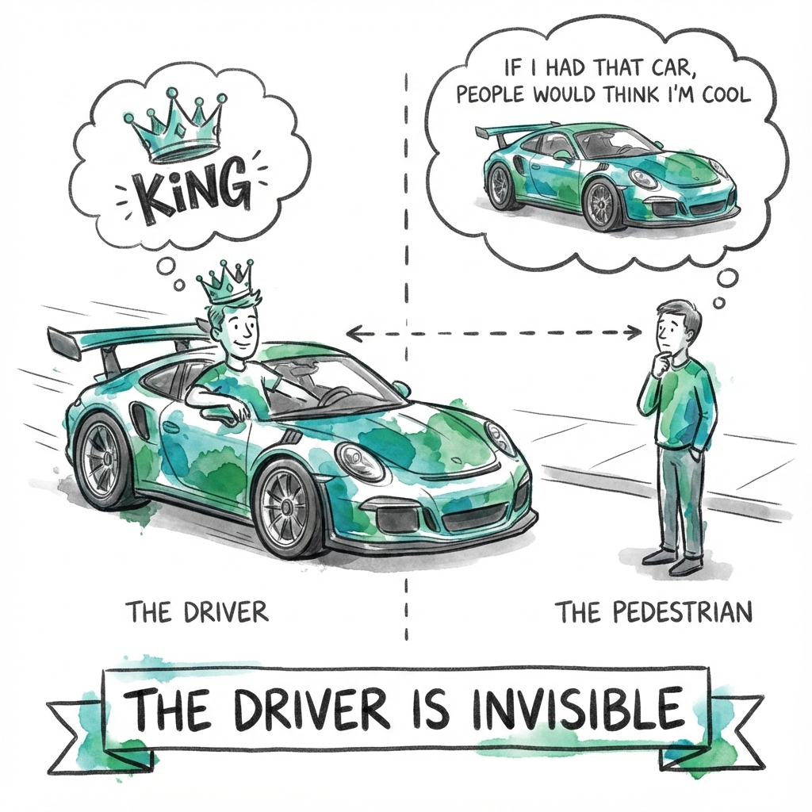
When you see someone driving a Ferrari, you rarely think, "Wow, that guy is cool." You think, "Wow, if I had that Ferrari, people would think I'm cool."
The irony is that no one cares about the driver. They are only looking at the car and imagining themselves in the driver's seat.
People buy luxury goods to signal status and gain respect.
But they don't realize that everyone else is too busy using those same goods to benchmark their own desire for status to pay any attention to them.
If you want respect and admiration, be kind and humble.
Horsepower and chrome won't get you there.
4. Wealth is What You Don’t See
There is a difference between being rich and being wealthy.
- Rich is current income. It’s the person driving the \$100,000 car. It’s visible. It screams "I have money."
- Wealth is income not spent. It’s the \$100,000 car not purchased. It’s the money in the bank that gives you options and flexibility.
The only way to be wealthy is to not spend the money you have.
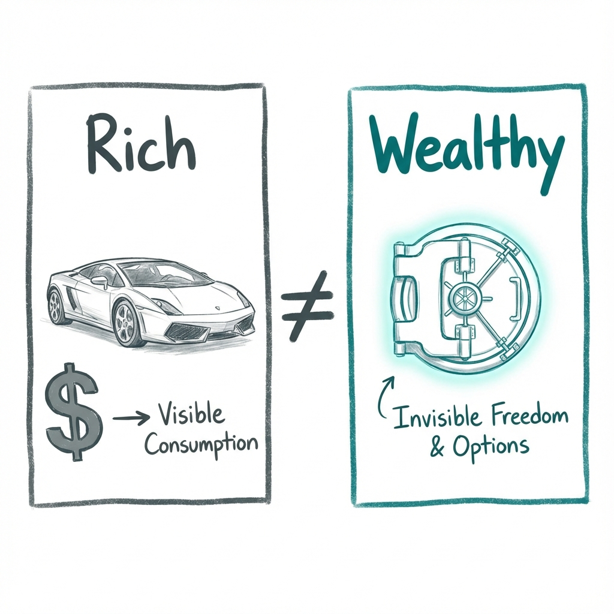
This is hard, because we are social creatures who learn by imitation. We can see rich everywhere, so we imitate it.
We can't see wealth, so it's harder to aspire to.
Wealth is hidden. It’s income not spent. Wealth is an option not yet taken to buy something later. — Morgan Housel
5. Save Money
You don't need a specific reason to save.
Saving for a house or a car is fine. But the best reason to save is for things you can't predict.
The world is filled with surprises.
If you only save for predictable goals, you are unprepared for the unpredictable curveballs life throws at you.
Savings that aren't earmarked for anything specific give you options. They give you the flexibility to change careers, retire early, or weather a storm.
Efficiency (spending less) is more important than investment returns.
Investment returns are uncertain. Spending less is 100% in your control.
Module 5: The Personal Challenge
Applying these lessons is the final hurdle. It requires self-awareness and an acceptance that you, too, are changing.
1. You’ll Change
We are poor forecasters of our future selves.
Psychologists call this the End of History Illusion.
We realize we have changed in the past, but we tend to believe that our current personality, desires, and goals are fixed.
- Young people pay to remove tattoos they paid to get.
- Middle-aged people divorce spouses they rushed to marry.
- Older adults work hard to lose what middle-aged adults worked hard to gain.
At every stage of our lives we make decisions that will profoundly influence the lives of the people we’re going to become, and then when we become those people, we’re not always thrilled with the decisions we made. — Daniel Gilbert
This makes long-term financial planning hard.
A plan that makes sense for you at 25 might be miserable for you at 45. To counter this, avoid the extreme ends of financial planning.
Don't aim for a life of extreme deprivation (to save every penny) or extreme work (to earn every penny).
Extremes increase the odds of regret.
Aim for moderation. And when you do change your mind, accept it.
Sunk costs are the devil. Move on as fast as you can.
2. All Together Now
We are all products of our history.
After World War II, America fostered a culture of consumption. Low interest rates and the GI Bill made borrowing cheap. Americans bought homes and cars in record numbers. For decades, income growth was shared broadly. A janitor and a banker drove similar cars and watched the same TV shows.
But since the 1980s, that has changed.
The economy has grown, but the gains have been unequal. The rich got richer, while the middle class stagnated. Yet, the expectations set in the post-war era—that everyone should live a similar lifestyle—remained.
This created a massive debt bubble as people tried to keep up with a lifestyle they could no longer afford. It fueled the anger that leads to political populism.
Understanding this history helps you realize that your view of money is not just personal. It is a reflection of the economic era you happen to live in.
3. Confessions
There is no single right answer in finance.
There is only the answer that works for you.
Here is what works for the author: 1. Independence: The goal is not to be rich, but to be independent. 2. High Savings: He saves a high percentage of his income because his lifestyle expectations have stopped moving. 3. House: He owns his house without a mortgage. This is financially irrational (cheap mortgage money could be invested for higher returns), but psychologically reasonable (it gives him peace of mind). 4. Cash: He holds more cash than most advisors recommend (20% of assets), to ensure he is never forced to sell stocks during a downturn. 5. Investing: He is a passive index fund investor. He doesn't try to beat the market. He trusts in the long-term growth of the global economy.
We own our house without a mortgage, which is the worst financial decision we’ve ever made but the best money decision we’ve ever made. — Morgan Housel
Do what helps you sleep at night.
Conclusion
Remember Ronald Read, the janitor who died with \$8 million? And Richard Fuscone, the Harvard-educated executive who went bankrupt?
The gap between them wasn't intelligence. It wasn't education. It wasn't connections.
It was behavior.
Read understood something Fuscone never learned.
Money is not a math problem. It's a psychology problem.
The numbers don't matter if you can't stick with the plan. The returns don't matter if you blow up before they compound. Wealth is what you don't see. It's the car not bought, the house not upgraded, the options not yet taken.
Freedom is the goal.
Not the freedom to buy things, but the freedom to control your time.
Survival is the strategy.
Stay in the game long enough, and compounding does the rest.
There is no single right answer.
There is only the answer that lets you sleep at night.
Ronald Read found his. Richard Fuscone never did.
Now find yours.
Every week, one book gets this treatment — fully structured, nothing skipped. Find them all at longform.online